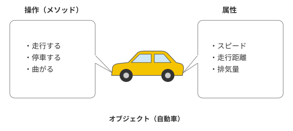
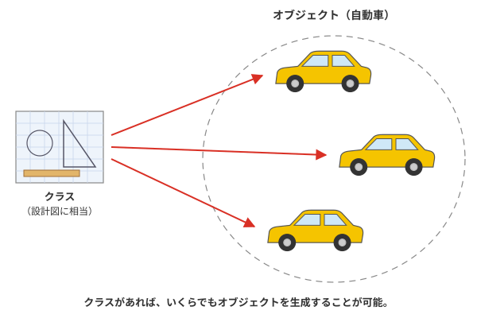

C言語の上位セットとしてのC++言語
1972年にC言語が開発されると、瞬く間に各方面で利用されるデファクトスタンダードの言語となりました。しかし、それにつれ、この言語の問題と限界が露呈するようになりました。
そのひとつは、C言語は、大規模な開発には、必ずしも向かないということです。時代の変化とともにコンピュータの性能が向上すると、多数のプログラマが参加する大規模開発が主流になってきました。しかし、C言語はそういったプログラミングを行ううえでは、必ずしも効率的な言語とはいえませんでした。そこで、C言語にオブジェクト指向的な拡張を施したC++(シー・プラス・プラス）言語が開発され、利用されるようになったのです。
オブジェクト指向
C++言語について詳しく説明する前に、オブジェクト指向とは何かということについて詳しく説明していきましょう。
オブジェクト指向の「オブジェクト」とは、英語で「もの」とか「物体」などを表す言葉で、データを現実世界のものに置き換える考え方です。
たとえば、オブジェクト指向プログラミング言語で、テレビを操作するプログラムを作成したと仮定します。そのとき、オブジェクト指向では、テレビを象徴する「テレビ」というオブジェクトを用意します。また、「テレビ」には、「スイッチを入れる」、「チャンネルを変える」などといった動作が伴います。これら動作のことを「メソッド」と言います。
オブジェクト指向では、これら「オブジェクト」とその動作である「メソッド」の組み合わせと、その相互作用でプログラムを記述します。
このような考え方が、現在のプログラミング言語の考え方の主流なのです。現在、主なオブジェクト指向言語には、以下のようなものがあります。
| 言語名 | 特徴 |
|---|---|
| C++ | C言語を更に拡張した言語。オブジェクト指向といった考え方に対応。 |
| Java | C/C++をベースにして、SunMicrosystemsによって開発された、Androidなどで用いられている言語。 |
| C# | Microsoft社がJavaなどをベースに独自に開発した言語。 |
| Objective-C | Apple社がC言語を独自に拡張した言語。iPhoneやiPadのアプリ開発に用いられる。 |
| Swift | Apple社によって開発されたObjective-Cの後継言語。iPhoneやiPadのアプリ開発に用いられる。 |
| Perl | スクリプト言語として、CGIなどに多用される。バージョン5よりオブジェクト指向になった。 |
| JavaScript | HP作成に用いられるスクリプト言語。jQueryなどに応用される。 |
| Python | Web開発などによく用いられる言語。拡張性に定評がある。 |
| Ruby | この中では、唯一日本人によって作成された言語。Pythonと共通点が多い。 |
| PHP | ウェブ開発に特化した言語。サーバーサイド側の処理を記述する。 |
現在使用されている主要なプログラミング言語は、ほとんどがオブジェクト指向言語です。したがって、C++でオブジェクト指向プログラミングを学べば、広い範囲に応用可能なのです。
C++言語の特徴
ここでは、C++言語の特徴について説明します。一般に、C++言語には、以下の長所・短所があるといわれています。簡単にまとめると、以下のようになります。
C++言語の長所
- C言語と互換性があり、ソースコードを再利用できる。
- 他のオブジェクト指向言語と違い独自のフレームワークを必要とせず、ネイティブコードを得られる。
- C言語よりもセキュリティの面が優れている。
これに対し、デメリットとしては以下のようなものがあげられます。
C++言語の短所
- 他の言語に比べ、言語仕様が複雑。
- 標準で利用できるライブラリが少ない。
- メモリ管理機能（GC機能）が存在しない。
といった点が挙げられます。
オブジェクト指向
オブジェクト指向の考え方
では、次にC++言語の特徴である、オブジェクト指向について、詳しく説明しましょう。オブジェクト指向とは、あらゆるものを、すべて「モノ」として表現するという考え方のことを言います。オブジェクト指向の、オブジェクト（Object）とは、英語で「モノ」を表す言葉です。
例えば、自動車を運転する際には、自動車内部の仕組みを理解する必要はありません。ただ運転方法だけを知っていれば、それだけで自動車を使うことができます。
つまり、「自動車」というオブジェクトは、動作させる仕組みがすでに内部に組み込まれていることから、それを利用するためには、仕組みを知る必要は一切なく、ただアクセルを踏む、ハンドルを切るなどといったような適切な操作をすればよいことになります。(図0-1参照)

図0-1：オブジェクト指向の考え方
オブジェクトには、操作にあたる、メソッドと呼ばれる部分と、属性（ぞくせい）があります。自動車の例で言えば、「発進する」「停止する」などがそのメソッドで、データは、スピード、走行距離、といったところでしょう。(表0-2参照)
| 属性 | スピード |
| 走行距離 | |
| 排気量 | |
| メソッド | 発進する |
| 停止する | |
| 曲がる |
クラスとオブジェクト
以上で、だいたいオブジェクト指向の考え方が理解できたかと思います。そこで、ここではさらに、クラスという概念について説明します。前述の、自動車という例を用いて説明すると、通常、世の中には、自動車がたくさん存在します。
オブジェクトは、こういった、個々の物体をさす場合に用いられる概念で、このほかに、インスタンスという呼び名もあります。
ただ、こういった自動車も、もとはひとつの設計図を元に大量生産されているはずなのです。この、設計図にあたるものを、クラスと言います。つまり、クラスがなければ、オブジェクトもありえないのです。以上が、基本的なオブジェクト指向の考え方です。オブジェクト指向には、このほかに様々な概念がありますが、今後適宜紹介していきます。（図0-2.参照）

図0-2：クラスとオブジェクト